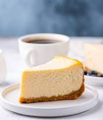

New York Style Cheesecake

Description
This recipe makes a classic New York-style cheesecake with a buttery graham cracker crust and rich, dense filling made from cream cheese, eggs, sugar, sour cream, vanilla, a hint of lemon, and a few tablespoons of flour.
Cream cheese is the key ingredient, so I recommend using a good brand, like Philadelphia. Though it is used most often as a spread for bagels (or a schmear), cream cheese is used to make many wonderful desserts, like my no-churn key lime pie ice cream, berry trifle, and cream cheese frosting.
Ingredients
For the crust:
- 1½ cups graham cracker crumbs, from 12 whole crackers
- 5 tablespoons unsalted butter, melted
- 2 tablespoons sugar
- ⅛ teaspoon salt
For the filling:
- 32 oz (four 8-oz blocks) cream cheese, at room temperature
- 2 cups sugar
- 3 tablespoons all-purpose flour
- 4 teaspoons vanilla extract
- 1 teaspoon packed lemon zest, from 1 lemon
- 2 teaspoons fresh lemon juice, from 1 lemon
- ¼ teaspoon salt
- 6 large eggs
- ½ cup sour cream
Steps
- Preheat the oven to 375°F and set an oven rack in the lower middle position. Wrap a 9- or 10-inch springform pan with one large piece of heavy-duty aluminum foil, covering the underside and extending all the way to the top so there are no seams on the bottom or sides of the pan. Repeat with another sheet of foil for insurance. Spray the inside of the pan with nonstick cooking spray.
- In a medium bowl, combine the graham cracker crumbs, melted butter, sugar, and salt. Stir until well combined. Press the crumbs into an even layer on the the bottom of the prepared pan. Bake the crust for 10 minutes, until set. Remove the pan from the oven and set aside.
- Reduce the oven temperature to 325°F. Set a kettle of water to boil.
- In the bowl of an electric mixer fitted with the paddle attachment or beaters, beat the cream cheese, sugar, and flour together on medium speed until just smooth, about 1 minute. Scrape the bottom and sides of the bowl to be sure the mixture is evenly combined. Add the vanilla, lemon zest, lemon juice, and salt; beat on low speed until just combined. Add the eggs, one at a time, mixing on low speed until incorporated, scraping the bowl as necessary. Mix in the sour cream. Make sure the batter is uniform but do not over-mix.
- Check to make sure your oven has cooled to 325°F, then set the cheesecake pan in a large roasting pan. Pour the batter on top of the crust. Pour the boiling water into the large roasting pan to come about 1 inch up the side of the cake pan. Bake until the cake is just set, 1 hour and 30 minutes to 1 hour and 45 minutes. (If the cheesecake starts to look too golden on top towards the end, cover it loosely with foil.) The cake should not look liquidy at all but will wobble just a bit when the pan is nudged; it will continue to cook as it cools.
- Carefully remove the roasting pan from the oven and set it on a wire rack. Cool the cheesecake in the water bath until the water is just warm, about 45 minutes. Remove the springform pan from the water bath and discard the foil. If necessary, run a thin-bladed knife around the edge of the cake to make sure it's not sticking to the sides (which can cause cracks as it cools), then cover with plastic wrap and transfer to the refrigerator to cool for at least 8 hours or overnight.